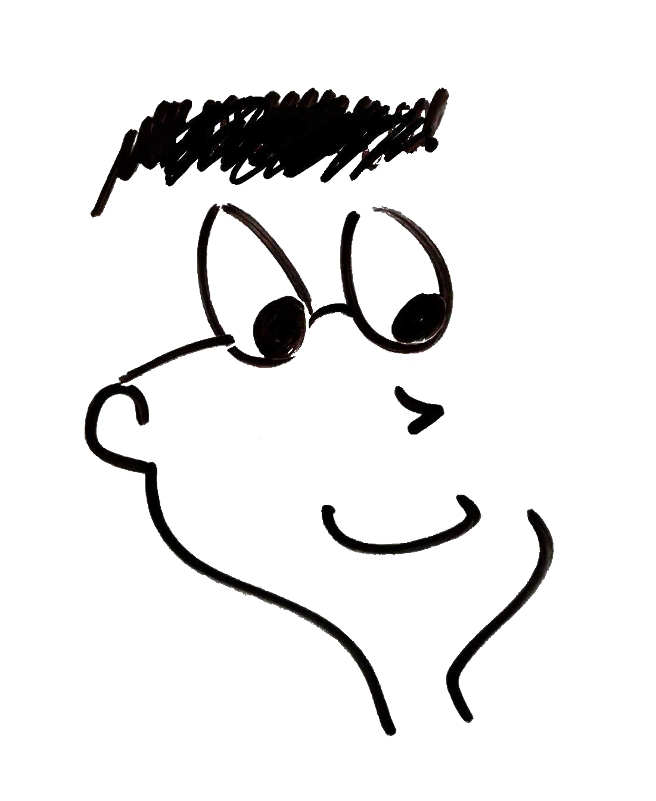
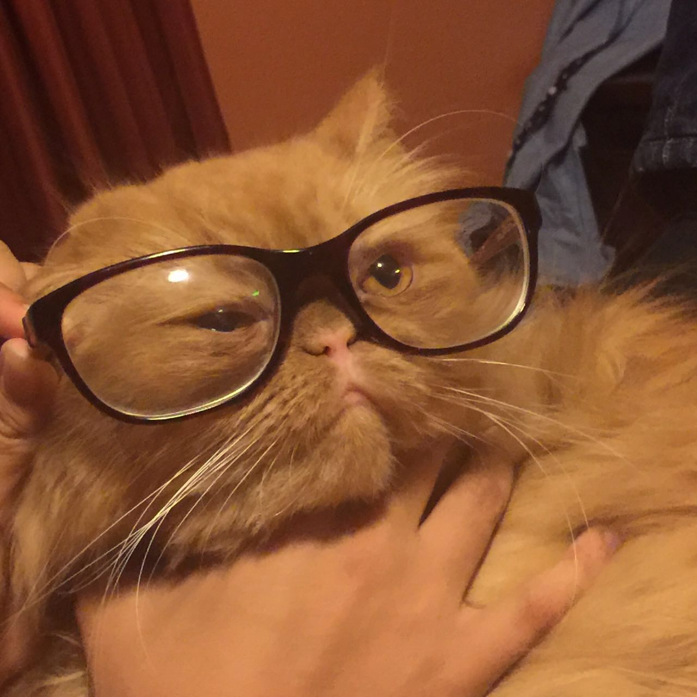
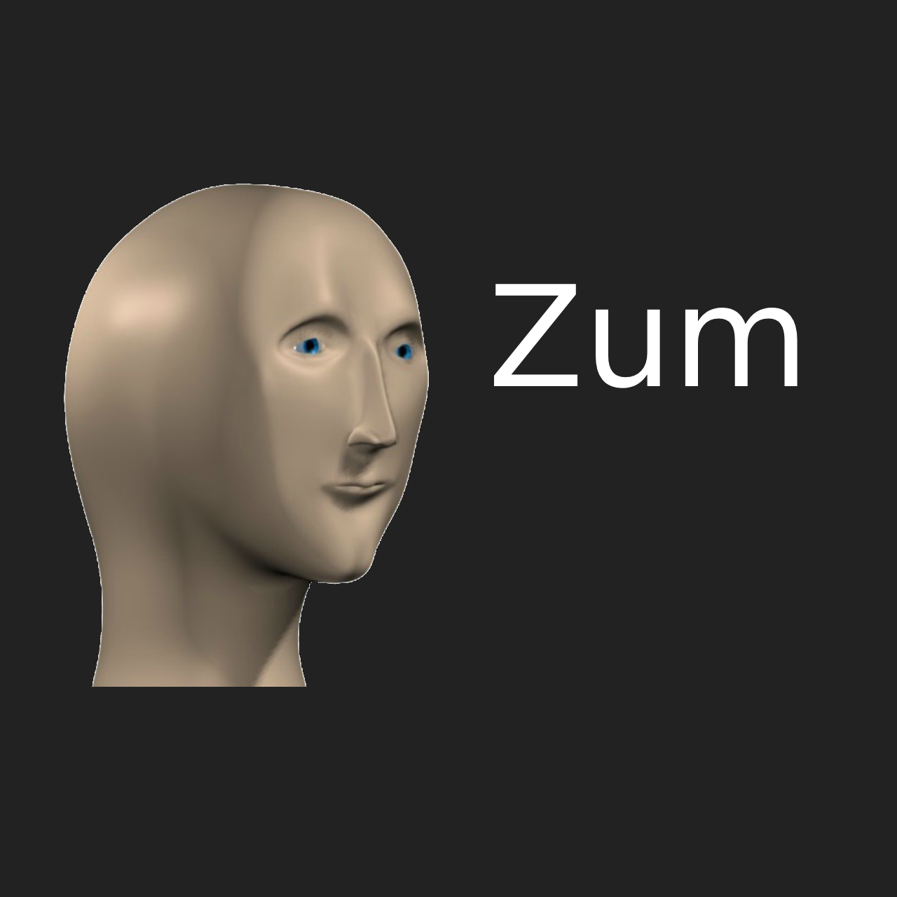

Mi apariencia no tiene rasgos fuertes que me separen de otras personas. Tengo una altura promedio y soy
bastante delgado. Tengo pelo y ojos negros.
Irónicamente, es más fácil que me identifiquen en clases online porque suelo elegir fotos de perfil
un poco inusuales. Entre estas están:
Dibujo de mí

Mi Mono Liso
Esta obra de arte la cree hace un año con nada más que mis manos, un pizarrón y un marcador. Asombroso, lo
sé. Siento que poner un dibujo es la manera más fácil de destacar en un grupo y me ahorro la timidez que
pasaría al poner una foto mía en clases.
Gato con lentes

Mi gato Leo con lentes
Hace un par de años le puse lentes a mi gato y le tomé una foto. Esa foto se quedó perdida en mi teléfono
hasta que necesité de una imagen de perfil. Quería una foto con sentido del humor, que no fuera ridícula
y no me diera vergüenza. La imagen de mi gato con lentes cumple con todos esos campos fácilmente.
Generalmente la uso para todo lo que no sea Zoom incluyendo mi Discord, GitHub y otros más
Meme Zum

Meme de Stonks
Esta imagen nació de un meme que vi en Reddit. Me entraron fuertes ganas de entrar a clases con un meme
como imagen de perfil, pero nunca me animaba. A inicios de esta semana por fin la empecé a usar, pero dejó
de darme gracia rápidamente. Probablemente la quite al final de esta semana después de ver las reacciones
que tienen los catedráticos a la imagen. Hasta el momento no ha habido ninguna reacción interesante… o una
reacción en general. ☹